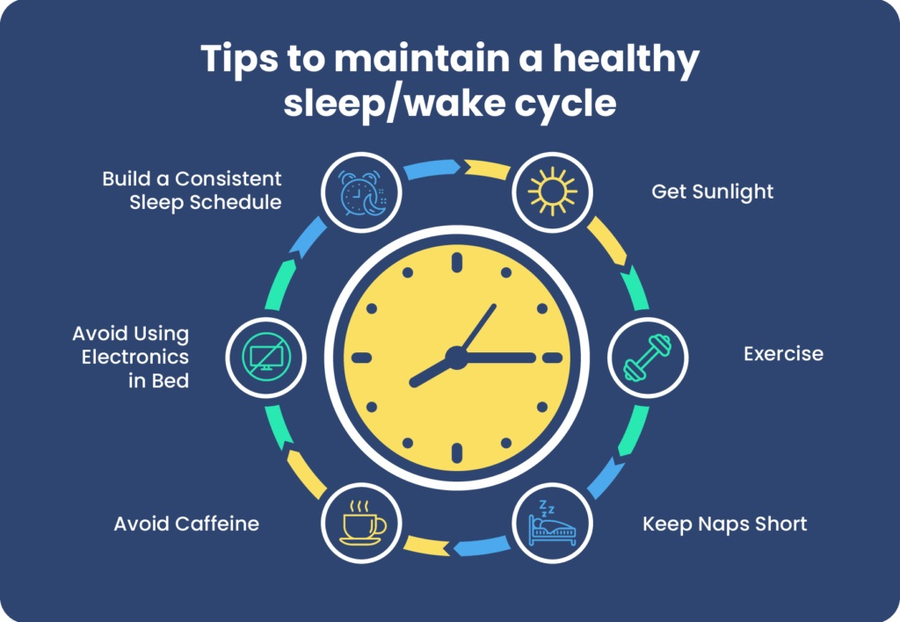
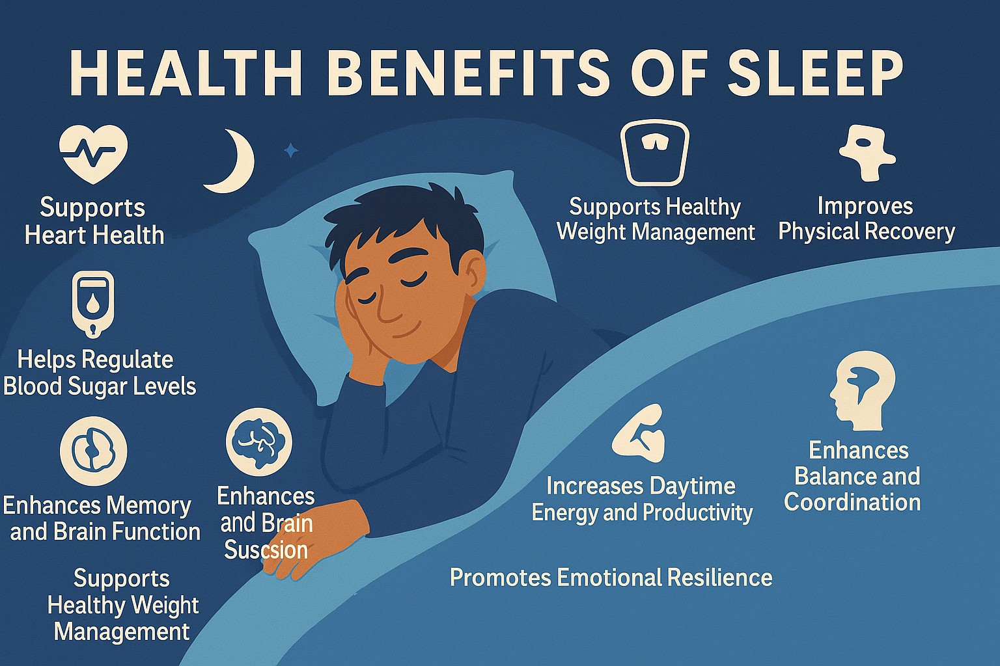
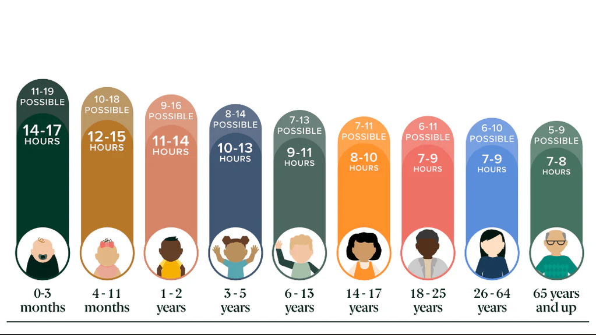
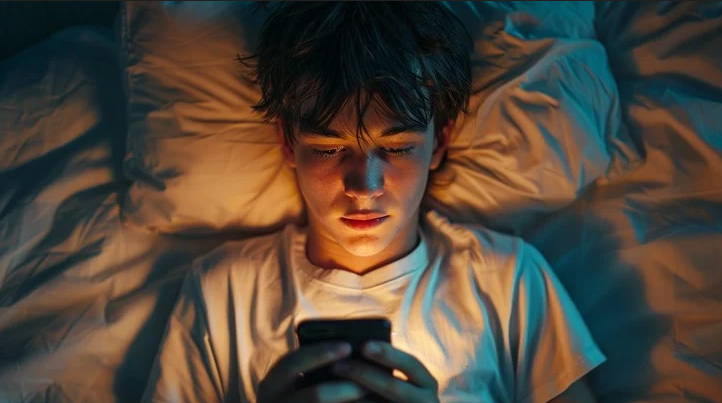

Sleep Health Guide
Overview
Sleep is not simply a time when your body shuts down. It is one of the most important biological processes that supports every aspect of your physical and mental health.The United Nations Sustainable Development Goal 3 calls for good health and well-being for all people and sleep is a foundational pillar of that vision.
Despite this, millions of people worldwide especially young adults and students are chronically sleep deprived. Busy schedules, screen time, stress, and poor habits mean that many of us are living on far less sleep than our bodies need. The consequences are serious, wide-ranging, and deeply connected to our daily quality of life.
The Science of Sleep

Sleep is regulated by two main biological systems: the circadian rhythm and sleep pressure (also known as homeostatic sleep drive). Understanding these systems can help you design a lifestyle that works with your body, not against it.
Circadian Rhythm
Your circadian rhythm is your body's internal 24-hour clock. It is primarily controlled by light exposure and regulates when you feel awake or sleepy. When you expose yourself to bright light in the morning, your brain suppresses melatonin (the sleep hormone) and signals wakefulness. As evening approaches and light dims, melatonin production rises, preparing your body for sleep.
Disrupting your circadian rhythm through late-night screen use, irregular sleep times, or shift work has serious consequences for both mental and physical health.
Sleep Pressure
The longer you are awake, the more a chemical called adenosine builds up in your brain. This build-up creates "sleep pressure" the feeling of tiredness that grows throughout the day. When you sleep, your brain clears adenosine, leaving you refreshed. Caffeine works by temporarily blocking adenosine receptors, which is why it keeps you awake but it does not clear the adenosine, so the tiredness returns once the caffeine wears off.
Health benefits of sleep

Over time, consistently good sleep can strengthen your immune system, improve emotional resilience, and support long-term well-being.
- Boosts Energy and Alertness
- Better Mood and Mental Health
- Facilitates Muscle Repair and Recovery
- Supports Heart Health
- Promotes Blood Sugar Control
- Enhances Cognitive Function
- Bolsters the Immune System
- Supports Stress Relief
- Enables Athletic Performance
- Aids in Healthy Weight Management
How much sleep you need

Most adults need between seven and nine hours of sleep every night to feel alert and gain all the benefits of good sleep
Sleep needs vary by age, and babies, young children, and teenagers all need more sleep than adults There is also some individual variation, as some adults may need more or less than seven hours to feel at their best.
Tips for getting better sleep

To get better sleep, start by improving daily habits and nightly routines. Adjustments to your sleep hygiene can be an important step toward getting all the benefits of sleeping well.
- Create a Consistent Sleep Schedule
- Nap Wisely
- Create a Sleep-Friendly Bedroom
- Avoid Caffeine, Nicotine, and Alcohol Before Bedtime
- Exercise During the Day
- Avoid Screens Before Bedtime
- Use Sleep Tracking to Spot Patterns
Further Resources
- Kirsch, D. (2023, July 25). Stages and architecture of normal sleep. UpToDate.: nhs.uk/nhs-services
- Cirelli, C. (2024, May). Insufficient sleep: Definition, epidemiology, and adverse outcomes. In R. Benca & A. Eichler (Ed.). UpToDate.: msf.org.uk
- Blackwelder, A., Hoskins, M., & Huber, L. (2021). Effect of inadequate sleep on frequent mental distress. Preventing Chronic Disease, 18.: who.int/health-topics/uhc
- Patel, A. K., Reddy, V., Shumway, K. R., Araujo, J. F. (2024, January 26). Physiology, sleep stages. StatPearls.: kingsfund.org.uk
- National Center for Chronic Disease Prevention and Health Promotion, Division for Heart Disease and Stroke Prevention. (2021, January 4). How does sleep affect your heart health? Centers for Disease Control and Prevention.: kingsfund.org.uk
- Watson, A. M. (2017). Sleep and athletic performance. Current Sports Medicine Reports, 16(6), 413-418.: kingsfund.org.uk
Return to the Home Page to explore the other SDG 3 topics our team has covered.